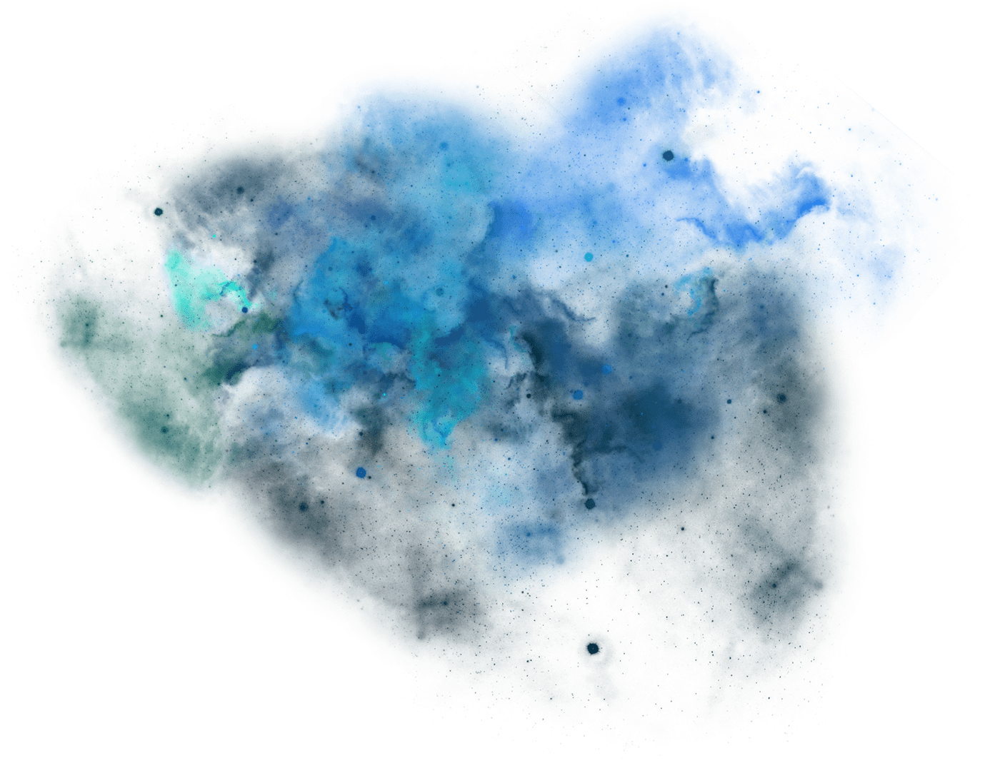

Не гасни, уходя во мрак Дагоя
Иди в свои Багровые Врата
Тропа витая в каменных громадах
Блуждает, но ведёт ко Фреху
Седой старик с безмерными руками
Тебя поднимет на вершину мира
Ты слышишь звон Шеклоков золотых
Один из них летать тебя научит
Иди в свой Занебесный Свет, мы встретимся с тобою
Иди в свой Занебесный Свет, мы помним о тебе
